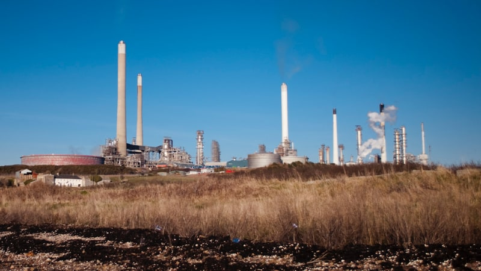

In February this year a report examining local authority staff pension fund investments found that the Devon Local Government Pension Scheme invests £157 million of its £4 billion fund in fossil fuel companies such as Royal Dutch Shell, BP, BHP, Anglo American and ExxonMobil.
The report found UK local government pension funds held nearly £10 billion worth of investments in oil, gas and coal companies.
Shell, BP and BHP account for around 40% of these investments. About two thirds of the funds are invested in oil and gas and about a third in coal. The Devon fund was identified among the largest fossil fuel investors, with nearly 4% of its money invested this way: its largest such holdings are around £36.5 million in Shell and £21 million in BP.
Devon Pension Fund currently has more than 39,000 actively contributing members, employed by 214 employers from unitary, district, town and parish councils, education establishments and other bodies in the region. Many of these organisations declared climate emergencies more than two years ago, including Devon County Council and Exeter City Council.
Both councils have also since passed formal motions in support of a Climate and Ecological Emergency Bill tabled in Parliament by Green Party MP Caroline Lucas which seeks, among other increases in UK climate policy ambition, an end to the extraction, export and import of fossil fuels.
Following the publication of the report, Devon County Council Investment and Pension Fund committee met to discuss Devon Pension Fund’s investment strategy, and its climate change policies in particular.
It agreed to sign up to a commitment framed by the Institutional Investors Group on Climate Change, of which Devon County Council is a member, aimed at alignment with the 2015 Paris Agreement’s goal of limiting global temperature rise to 1.5°C above pre-industrial levels.
The commitment includes setting interim investment portfolio carbon reduction targets across all emissions scopes and reducing the net greenhouse gas emissions of the portfolio to zero by 2050 or sooner.
The Devon Pension Fund investment strategy also said this included actively “promoting emissions reductions at the companies invested in” but the IIGCC commitment does not contain those words, although it does refer to the Paris Aligned Investment Initiative’s Net Zero Investment Framework which proposes strategic asset allocation, policy advocacy and market engagement among its approaches.
The county council subsequently issued a statement summarising the new pension fund climate change investment strategy. Then Councillor Ray Bloxham, who was chair of the council’s investment and pension fund committee at the time, emphasised the strategy’s shareholder activist perspective. He said:
“Simply pulling the plug on investing in carbon intensive industries isn’t the answer because they are inextricably linked to the very industries that are working to find sustainable solutions.
“To give an example, the steel industry is carbon intensive but is also vital in the production of the wind turbines we need to increase the supply of renewable energy.
“To achieve real emissions reductions, it is vital we engage with the companies we are invested in, to hold them to take responsibility for their product throughout its usage, not just in its manufacture.”
We asked the county council to clarify these remarks. We were told that collective shareholder pressure aimed at company reduction of direct and indirect greenhouse gas emissions has more impact than divestment and will do more to tackle climate change.
BP petrol station on the Wirral. Photo: Wikimedia under a Creative Commons license.
Green Party councillor Jacqui Hodgson, who represents Totnes & Dartington at County Hall, raised the issue again during members’ questions on 29 April. She asked what steps were being taken to expedite the changes required by the Devon Pension Fund’s newly agreed commitment “to ensure the utmost expediency in divestment from fossil fuels, as this investment is undermining the Devon Carbon Plan and the opportunity to address and mitigate carbon emissions, and putting Devon County Council investments and pension funds at substantial risk”.
Ray Bloxham responded in his then role as chair of the council’s investment and pension fund committee. (He stood down at the May local elections, when Henry Gent won his seat for the Green Party.) He said: “The fund is making a significant contribution towards the climate change agenda and is wholly aligned to the wider aspirations of the council. Disinvestment is not our preferred approach and I firmly believe that disinvestment does not help to respond to climate change one iota.
“Disinvestment from the companies listed would not stop those companies from operating but simply remove any influence we have as an influential investor. And we are having an influence. Shell are engaged in research into alternative fuels and BP are very much involved in renewables. Disinvestment would withdraw from that diversification.”
We asked the county council to give examples of ways in which specific operational decisions by Shell and BP which have led to measurable reductions in greenhouse gas emissions have been directly influenced by Devon Pension Fund. We were told that shareholder engagement with Shell and BP has had a significant impact on the approach of both companies.
London Gateway port with oil pipeline terminal. Photo: Wikimedia under a Creative Commons license.
However a peer-reviewed study published eariler this month, which concluded that the realistic window for meeting the 1.5°C target is very rapidly closing, singled out Shell’s so-called “Sky” corporate carbon reduction strategy for criticism.
Study co-author Professor Tim Lenton, Director of the University of Exeter Global Systems Institute said it “calls for an immediate acceleration of worldwide action to reduce greenhouse gas emissions by all available means”.
Professor Gail Whiteman of the University of Exeter Business School, another study co-author, said: “The Shell Sky scenario has been called pie in the sky, and that’s indeed what it is. In the business community some still like it because it seems to offer, in comparison to other scenarios, a relatively easy way out of the climate crisis. Our analysis shows, however, that there are no easy ways out.”
Shell has since published a revised version of what its calls its “energy transition strategy”. It is based on reducing the “carbon intensity” of the energy it produces by diversifying into other activities while modestly decreasing its oil production in favour of expansion of its gas business.
However this approach allows continuing high or even increasing greenhouse gas emissions levels while diluting the overall proportion of emissions, meaning the company’s absolute emissions could fall by as little as 10% over the next ten years.
Shell gas station in Connecticut. Photo: Wikimedia under a Creative Commons license.
Gail Whiteman and Professor Johan Rockström of Stockholm University’s Resilience Centre jointly assessed the changes to Shell’s strategy. They said:
“Analysis of the latest plans show the company will attempt to meet its self-declared targets while freezing emissions at more or less the same level as today. In fact, it’s currently forecasting an increase in gas production and gas exports to global markets.
“Rather than reducing its emissions, Shell plans to offset gigatonnes of emissions by planting trees to capture carbon. It says that reforestation and other nature-based technology will be enough to allow its expanding operations. But Shell’s Sky scenario requires a forest the size of Brazil to offset the volume of carbon it intends to continue pumping out.
“Offsetting carbon emissions with forest growth at this scale is a dangerous fantasy. Science tells us it is simply not possible to substitute carbon emissions from coal, oil and gas, with unstable ‘green’ carbon sinks in trees and soil. While offsetting with nature-based solutions and techniques for carbon dioxide removal is necessary, it should only be used to offset residual, difficult to abate sectors like agriculture and aviation.
“Shell sees oil and gas playing a role in our global economy for many decades to come. Science says that is simply not feasible if we want to avoid catastrophic climate breakdown.”
BP is in a similar position. While it was the first major oil company to truly change course, partly as a result of shareholder pressure, announcing in August last year that it would reduce its oil and gas production by 40% by 2030 (compared to 2019 levels), its “getting to net zero” aims nevertheless rely on the same “carbon intensity” approach taken by Shell.
And it only intends to halve the “carbon intensity” of the greenhouse gas emissions from its scope three energy product sales by 2050, which is why the company’s investor-led CA100+ assessment concludes its corporate strategy remains incompatible with the Paris Agreement.
BP will start up seven major new hydrocarbon production projects in 2022, with at least three more following in 2023 or later. Even the International Energy Agency, which was established to ensure the energy supplies of rich, industrialised countries in the wake of the 1973 oil crisis, has now concluded that all investment in new coal, oil and gas production must cease immediately and all exploitation and development of new oil and gas fields must halt this year.
 BP petrol station in Barnet Hill. Photo: Wikimedia under a Creative Commons license.
BP petrol station in Barnet Hill. Photo: Wikimedia under a Creative Commons license.
But the fossil fuel industry is a global juggernaut that is not so easy to stop.
A recent study of Shell, BP, Chevron and ExxonMobil, the top four investor-owned hydrocarbon companies by size of direct and indirect historical greenhouse gas emissions, showed that executive compensation packages directly incentivise continued exploration, extraction and production of fossil fuels as well as promotion of demand for their consumption. Shell’s CEO Ben van Beurden earned more than $23 million from the company in 2018, with his peers close behind.
The study also found that the four companies, whose scientists knew that their products contributed to global warming by the late 1970’s or earlier, spent a total of $731 million on lobbying in the US between 1998 and 2019. A 2019 report separately found that the five largest publicly-traded oil and gas majors spent more than $1 billion in the three years following the Paris Agreement on “misleading climate-related branding and lobbying”.
Another recent study by a coalition of NGOs found that fossil fuel firms received $3.8 trillion in finance from the world’s banks in the five years following the 2015 Paris Agreement. And a report published this week concluded that UK banks and investors are responsible for global greenhouse gas emissions that nearly double the UK’s annual total, which would make the City of London the ninth biggest carbon emitter in the world if it were a country, ranked higher than Germany.
And while the fossil fuel divestment movement has grown significantly in size and influence over the past ten years, has contributed to the social stigmatisation of oil and gas companies and is likely to influence some investment decisions as well as policy-making, there is little conclusive evidence that it has had a direct adverse impact on their share price to earnings ratio, the basis of their market valuations.
Despite the conclusions of a joint investigation into the historical financial performance of energy companies by Imperial College and the International Energy Agency which concluded that investment in renewables generated higher returns than fossil fuels across all portfolios, and presented lower risks in global and advanced economies portfolios, the oil and gas majors would not be more profitable were they to transition overnight to renewables.
This is partly because of the high cost barriers which prevent new entrants to the markets which they currently dominate, preventing competition, and partly because their profit margins are much higher than those in the renewable sector. Shell recently posted profits of $3.2 billion for the first quarter of 2021: its CEO said the company was “ideally positioned to benefit” from the world’s recovering demand for fossil fuel.
 Shell refinery in the Netherlands. Photo: Steven Lek under a Creative Commons license.
Shell refinery in the Netherlands. Photo: Steven Lek under a Creative Commons license.
The Devon Pension Fund does not directly own shares in BP or Shell, but does own units in pooled passive equity investment funds which own such shares. These funds are managed on Devon Pension Fund’s behalf by Legal & General Investment Management (LGIM), which directs voting on behalf of the shareholders for which it is responsible. LGIM is Britain’s biggest fund manager, overseeing more than £1.2 trillion of assets. It is accountable to its fund unit holders, including Devon County Council, in respect of such votes.
At the BP Annual General Meeting on 12 May, a Dutch fossil fuel industry shareholder activist group called Follow This submitted a resolution which challenged the company to set and publish greenhouse gas emissions targets that are consistent with the Paris Climate Agreement, covering all scopes including its suppliers and the consumption of its energy products.
BP’s board recommended that shareholders vote against the resolution, claiming that the company’s existing strategy was Paris Agreement-compliant despite its scope three aim to reduce the “carbon intensity” of the products it sells by just 50% by 2050.
LGIM voted with the board and against the Follow This resolution, although the resolution did receive the support of 20.7% of the company’s shareholders, an increase of 12.3% since the 2019 AGM. The activist group’s founder, Mark van Baal, said: “Oil major boards rarely take the initiative to move on their own. The shareholders have to compel them to set targets, and have to support them to attain these targets.”
We asked Devon County Council why LGIM did not vote in favour of this resolution on Devon Pensions Fund’s behalf. A spokesperson said that as BP had set targets which “appear consistent” with the Paris Agreement it was “unclear what additional action the company could take”.
Then, at the Shell AGM on 18 May, Follow This, which first began co-ordinating investors around these issues at the company’s 2016 AGM, put forward a similar Paris Agreement-aligned resolution in direct challenge to a competing board-proposed resolution supporting the company’s revised “energy transition strategy”.
Just over 11% of Shell’s shareholders voted against the board’s strategy, while the Follow This resolution received 30.47% of the votes, its support more than doubling since last year when 14.4% of shareholders voted in favour. In 2016 just 2.7% supported the Follow This motion. Under UK corporate governance rules, winning more than 20% of the votes means that the company is compelled to consult shareholders on the resolution’s content and report back within six months.
At this meeting LGIM voted against the board resolution and in favour of the Follow This resolution. It said it did so because it did not believe the company’s plan could “credibly claim alignment with a 1.5°C pathway”. However it said that while it backed the activist group “on this occasion”, it had reservations about its objective of using shareholder activism to turn oil and gas firms into renewable energy companies, saying a strategy of “managed decline” would be an equally viable option.
The investment management company’s recommendation for the oil and gas industry is to focus primarily on reducing its own emissions (and production) in line with global climate targets before considering any potential diversification into clean energy.
 Oil refinery in Pembrokeshire. Photo: Wikimedia.
Notwithstanding the differences in position between Devon Pension Fund and its investment manager on shareholder activism in fossil fuel companies, the growing influence of shareholder vote co-ordination groups such as Follow This is evident. As this story went to press ExxonMobil was facing a shareholder rebellion backed by the company’s largest shareholder aimed at dislodging board members, and Chevron shareholders were about to vote on another Follow This resolution aimed at cutting its carbon emissions.
However it is nevertheless clear that while increasing support for such interventions has put climate change higher up oil company agendas, both BP and Shell, in which Devon Pension Fund has invested £57 million, are still pursuing corporate strategies that are incompatible with the Paris Agreement.
Neither currently plan to become predominantly renewable energy companies, there are limits on the influence their shareholders can bring to bear, their management are both incentivised and obliged to maximise their profits, and the world can no longer wait for them to change course voluntarily.
It may be that the only means by which the fossil fuel industry might meet the Paris Agreement targets, at least insofar as the UK can influence it, would be corporate governance reform legislation which forces the City of London into alignment with the government’s professed climate change leadership position.
A report published today by risk intelligence company Verisk Maplecroft suggest that this may be the direction of travel, even though policy-makers currently appear unaware of their destination.
It warns that none of the G20 countries are on track to meet their climate goals, and that there is “no longer any realistic chance of an orderly transition” to a low-carbon future for global financial markets because political leaders will be forced to rely on “handbrake” policy interventions to cut emissions.
The report’s authors said: “These conditions will leave businesses in carbon-intense sectors facing the most disorderly of transitions to a low-carbon economy, with [restrictive] measures imposed with little warning.
“Companies and investors across all asset classes must prepare for at best a disorderly transition and at worst a whiplash from a succession of rapid shifts in policy across a host of vulnerable sectors.”
Oil refinery near the River Tees. Photo: Philip Barker under a Creative Commons license.
As things stand, despite Parliament passing legislation in June 2019 committing the UK to reaching net zero by 2050, national climate action plans have been criticised for lack of ambition in key areas and are being undermined by recent decisions including cutting domestic air passenger duty and foreign aid, freezing vehicle fuel duty for the eleventh year in a row and axing the flagship green homes grant scheme.
The House of Commons Public Accounts Committee says the government does not have a “co-ordinated plan”, the National Audit Office says the UK is currently not on track to meet its targets and the Institute for Government says it has “not yet confronted the scale of the task”.
And with Devon County Council happy to follow the government’s business-as-usual post-coronavirus recovery playbook, welcoming a £38 million Department for Transport road-building grant to “unlock growth” on the back of ever-inflating residential housing values, it doesn’t look like Devon Pension Fund’s 39,000 actively contributing members can expect leadership on this issue from local government either.
UPDATE I: After this story went to press, it was announced that a court in the Hague has ordered Shell to cut its carbon emissions in line with the Paris Agreement, with these reductions to include the emissions caused by their suppliers and the consumption of their products, the scope for which both Shell and BP have so far evaded responsibility.
The landmark case, brought by Friends of the Earth Netherlands and more than 17,000 co-plaintiffs, is the first time a corporation has been held liable for causing climate change. Roger Cox, the campaign group’s lawyer said: “This is a turning point in history. This case is unique because it is the first time a judge has ordered a large polluting corporation to comply with the Paris Climate Agreement. This ruling may also have major consequences for other big polluters.”
Shell has been ordered to comply with the judgement immediately, but nevertheless plans to appeal against the decision, which will only apply in the Netherlands. However it raises the possibility that similar cases could be brought in other legal jurisdictions if corporations do not comply with the Paris Agreement and governments will not intervene to compel them to do so.
UPDATE II: We have now received confirmation from Devon County Council of how Legal & General Investment Management voted on behalf of Devon Pension Fund at the Chevron and ExxonMobil AGMs which were held after this story went to press.
LGIM voted among a 61% majority in favour of the Follow This proposal at the Chevron AGM, which will force the company to reduce its emissions faster than it planned, and in favour of all four reforming ExxonMobil board candidates proposed by activist hedge fund Engine No.1 as well as against the retention of the company’s CEO.
Three of the four reforming candidates, who are all experienced oil industry executives, were elected to the board to pursue a profit-oriented, risk-focussed climate action agenda, but CEO Darren Woods retained his position. ExxonMobil is not only one of the world’s biggest contributors to the climate crisis, it is also the world’s greatest single-use plastic waste polluter.
Since then Shell CEO Ben van Beurden has issued a defiant statement in which he insisted the company had been playing a leading role in decarbonising the sector, questioned the Hague court ruling and confirmed the company would appeal.
He also said that the company expects to continue selling oil and gas products for “a long time to come” and said that it would not help the world “one bit” if Shell “stopped selling petrol and diesel today”. Rather, he said, his company’s customers should “find their own pathways to achieve net-zero emissions” and invited governments to intervene with policies and regulation.


{kind=link}
{kind=link}
.jpg){kind=link}
{kind=link}
{kind=link}
{kind=link}
{kind=link}